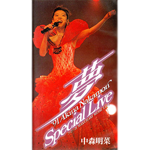

现场视频：第3张
发行年份：1992年
发行日期：7月25日
| 歌名 | 作词 | 作曲 |
|---|---|---|
| Opening | ||
| 難破船 | 加藤登紀子 | 加藤登紀子 |
| 二人静 -「天河伝説殺人事件」より | 松本隆 | 関口誠人 |
| DESIRE -情熱- | 阿木燿子 | 鈴木キサブロー |
| LA BOHÈME | 湯川れい子 | 都志見隆 |
| 十戒 (1984) | 売野雅勇 | 高中正義 |
| TATTOO | 森由里子 | 関根安里 |
| LIAR | 白峰美津子 | 和泉一弥 |
| 乱火 | 大津あきら | 鈴木キサブロー |
| 雨が降ってた… | 岩里祐穂 | 上田知華 |
| Dear Friend | 伊東真由美 | 和泉一弥 |
| CARIBBEAN | 大西美帆 | 和泉一弥 |
| 目をとじて小旅行 | 篠塚満由美 | 茂村泰彦 |
| スローモーション | 来生えつこ | 来生たかお |
| セカンド・ラブ | 来生えつこ | 来生たかお |
| 北ウイング | 康珍化 | 林哲司 |
| ミ・アモーレ〔Meu amor é･･･〕 | 康珍化 | 松岡直也 |
| 水に挿した花 | 只野菜摘 | 広谷順子 |
| 忘れて… | 中森明菜 | 羽佐間健二 |
首发规格：VHS: WPVL-8128，LD: WPLL-8128
唱片公司：Warner Music Japan
获奖：多媒体大奖赛（视频类音乐视频奖）
再发行：
2001年4月25日 - DVD: WPB6-90013
2001年11月7日 - DVD: WPB6-90103
2003年11月1日 - DVD: WPBL-90016
2004年11月3日 - DVD: WPBL-90016
2006年6月21日 - DVD: WPBL-90066
2007年1月24日 - DVD: WPBL-90090~4
2014年6月18日 - BD: WPXL-90076